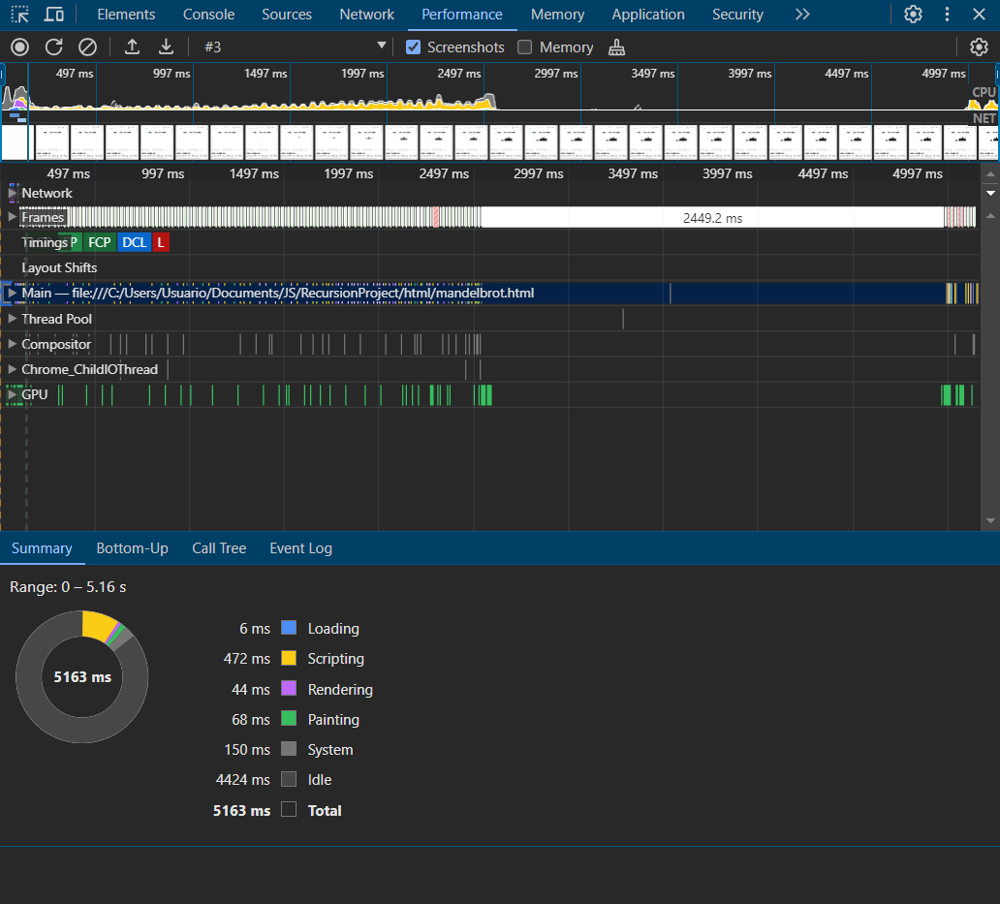

El conjunto de Mandelbrot es un tipo de fractal, lo que significa que presenta una estructura autosimilar a diferentes escalas. Es uno de los fractales más estudiados y apreciados por su belleza y complejidad.
Función iterativa: Se comienza con un punto "c" en el plano complejo. Se aplica una función matemática simple a "c" repetidamente, utilizando el resultado anterior como nuevo punto para la siguiente iteración. La función utilizada es:
Zn+1 = Zn2 + c
Donde:
Convergencia vs Divergencia: Se observa el comportamiento de la secuencia de puntos Zn. Si la secuencia converge a un valor finito, el punto "c" se considera parte del conjunto de Mandelbrot. Si la secuencia diverge hacia el infinito, "c" no pertenece al conjunto.
Este código en JavaScript genera una representación del fractal de Mandelbrot en un elemento canvas de HTML.
const canvas = document.getElementById('mandelbrotCanvas');
const ctx = canvas.getContext('2d');
const width = canvas.width;
const height = canvas.height;
const max_iter = 256;
function mandelbrot(c, z = { x: 0, y: 0 }, n = 0) {
if (n >= max_iter) {
return max_iter;
}
const z_next = {
x: z.x * z.x - z.y * z.y + c.x,
y: 2 * z.x * z.y + c.y
};
if (z_next.x * z_next.x + z_next.y * z_next.y > 4) {
return n;
}
return mandelbrot(c, z_next, n + 1);
}
function drawPixel(x, y) {
const min_x = -2, max_x = 1;
const min_y = -1.5, max_y = 1.5;
const c = {
x: min_x + (x / width) * (max_x - min_x),
y: min_y + (y / height) * (max_y - min_y)
};
const m = mandelbrot(c);
const color = m === max_iter ? 0 : 255 - Math.floor(255 * m / max_iter);
ctx.fillStyle = `rgb(${color}, ${color}, ${color})`;
ctx.fillRect(x, y, 1, 1);
}
function drawMandelbrotRow(y) {
if (y >= height) {
return;
}
for (let x = 0; x < width; x++) {
drawPixel(x, y);
}
// Llamada recursiva para la siguiente fila
requestAnimationFrame(() => drawMandelbrotRow(y + 1));
}
drawMandelbrotRow(0);
const canvas = document.getElementById('mandelbrotCanvas');
Obtiene el elemento canvas del DOM por su ID mandelbrotCanvas.
const ctx = canvas.getContext('2d');
Obtiene el contexto de dibujo 2D para el canvas, que se utiliza para dibujar en él.
const width = canvas.width;
const height = canvas.height;
Establece las variables width y height para almacenar las dimensiones del canvas.
const max_iter = 256;
Define el número máximo de iteraciones para el cálculo de cada punto en el conjunto de Mandelbrot.
Inicio del dibujo:
drawMandelbrotRow(0);
Comienza el proceso del dibujo con la primera fila del canvas.
Se uso la interfaz de la herramienta de desarrollo del navegador Chrome, específicamente la pestaña de "Performance" durante una sesión de perfilado (profile) de rendimiento.
La ventana capturó aproximadamente 5.16 segundos de tiempo.
6 ms
472 ms, que es donde más tiempo se invierte en ejecutar el código JavaScript (mandeldrot.js), esto pasa debido que aquí es donde se tiene el cálculo del fractal de Mandelbrot.
44 ms
68 ms, que indica el tiempo que toma el navegador en pintar los píxeles en la pantalla después de calcular el fractal.
150 ms, puede incluir operaciones del sistema operativo fuera del control del navegador.
4424 ms, durante este tiempo el navegador no está procesando ningún trabajo relacionado con la página.
La barra superior muestra la tasa de FPS a lo largo de la ejecución. Hay algunas caídas significativas de FPS, lo que puede indicar que el navegador está luchando para mantener una experiencia fluida durante las operaciones de cálculo y el dibujo.
Este código puede que no sea el mejor, sin embargo, funciona muy bien, aun así, se pueden aplicar varias técnicas para mejorar su rendimiento y eficiencia:
Evitar calcular repetidamente valores que no cambian dentro de los bucles. Por ejemplo, los factores de escala para las coordenadas x e y pueden calcularse una vez fuera de la función drawPixel.
En la función mandelbrot, evitar hacer cálculos innecesarios dentro del bucle de iteración. Por ejemplo, el cálculo del valor absoluto de z (usado para determinar si z se escapa del límite) se puede optimizar.
En lugar de dibujar un píxel a la vez con fillRect, se puede utilizar ImageData para modificar un buffer de imagen en memoria y luego dibujarlo en el canvas en una sola operación. Esto reduce significativamente el número de llamadas a la API de dibujo y puede mejorar el rendimiento.
Si bien JavaScript en el navegador es principalmente de un solo hilo, se puede hacer uso de Web Workers para calcular los puntos del fractal en paralelo. Esto puede acelerar el cálculo al utilizar múltiples núcleos del procesador.
En lugar de calcular el color para cada punto en cada iteración, se puede crear una paleta de colores una sola vez y reutilizarla. Esto es especialmente útil si el número de colores es significativamente menor que el número de iteraciones.
Implementar optimizaciones matemáticas como el algoritmo de period checking para reducir el número de iteraciones necesarias para puntos que caen dentro de ciertas áreas del conjunto.
Si ciertas áreas del conjunto se calculan con frecuencia, se pueden cachear los resultados para evitar recalculaciones innecesarias.